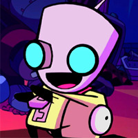
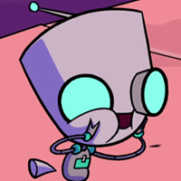

Este soy yo
- 
- 
-


GIR (iniciales de "Garbage Information Recollector" en español "Recolector de Información Basura" o simplemente "GIR") es una unidad U.C.I (Unidad de Captura e Información) defectuosa ayudante de Zim. Él también es su único verdadero amigo y compañero, Gir fue construido a partir de piezas de un basurero (un chicle, un clip y un palo) y luego fue dado a Zim por los Todopoderosos Más Altos en lugar de un UCI normal. Su voz en inglés es hecha por el actor de doblaje Rosearik Simons Rikki. Ha aparecido como protagonista en "La Invasión del Cerebro de Perro Tonto" y "GIR se Vuelve Loco", mientras que tiene un papel menor o secundario en casi todos los otros episodios de la serie.Las únicas diferencias entre Gir y las unidades UCI regulares son la coloración única de las partes luminosas del cuerpo de Gir (azul en vez de rojo), y una configuración diferente para los ojos y la boca rayada.